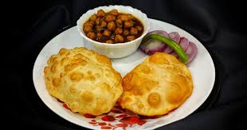

Chole Bhature

Description
Chole Bhature is a classic North Indian dish that's rich, flavorful, and
incredibly satisfying. It features spicy chickpea curry (chole) served
with deep-fried, fluffy bread (bhature). It can be enjoyed mild or
extra spicy - I love it spicy!!
Ingredients
- All-purpose flour (for Bhature)
- Boiled chickpeas (for Chole)
- Onions and tomatoes
- Ginger, garlic, and green chilies
- Indian spices (coriander, cumin, garam masala, etc.)
- Yogurt (for dough)
Steps
- Prepare the dough for Bhature and let it rest
-
Cook the spicy chole using chickpeas, spices, and a rich tomato-onion
base
- Roll and deep-fry the bhature until golden and puffed
- Serve hot with sliced onions, lemon, and pickles
Home